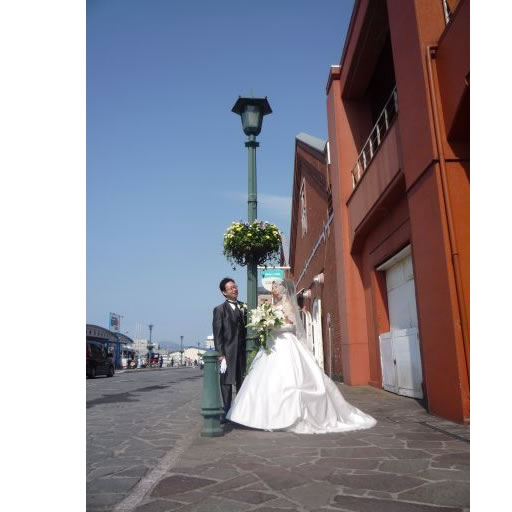
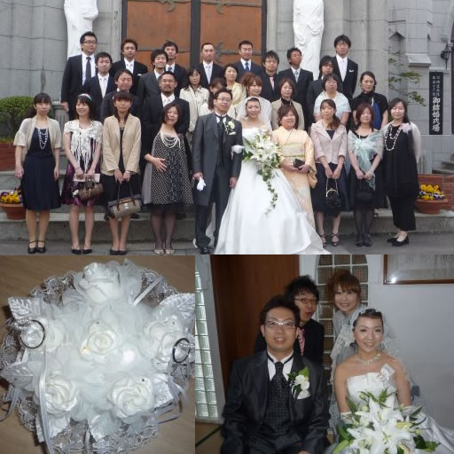

♡函館・カトリック元町教会で結婚式を挙げました♡
♡函館・カトリック元町教会で結婚式を挙げました♡
♡ALOHA♡
2009年5月9日の函館は、良い天気です！ハワイに負けないくらいの青空でした。
この爽やかな日にピッタリの爽やかカップル「ヤスヒロさんとハルカさん」の結婚式がありました♡＾▽＾♡
挙式前、函館らしい景色をバックにStory Photoヽ(○´∀`)ﾉ♪
写真が趣味のヤスヒロさんは、タキシード姿になっても、お嫁さんを撮ります・・・
やはり愛するダーリンが撮影するとお嫁さんは良い表情になるんですね〜〜♡o｡.(✿ฺ｡ ✿ฺ 
そして、いよいよ「函館・カトリック元町教会」での結婚式です。
花嫁は、たくさんの参列者が見守る中、花嫁はパパと感動の入場でした。
ご親族の皆さんでの集合写真の後、お友達での集合写真も撮影しました！

挙式が終了し、教会の鐘の音とシャボン玉で祝福の動画もご覧下さい！
引き続き、楽しかったウエディングパーティーの様子もご紹介致します・・・お楽しみにね（^^)
♡MAHALO♡
この様子は携帯サイトでもご覧頂けますよ^^
☆コメント大歓迎です☆ |

おぉ〜綺麗な花嫁さんですね。
ご主人も素敵。メガネがちょっと変わってて、こだわりがあるんでしょうねぇ。
2009/5/10(日) 午前 11:22
こんにちは！ランダムからきました。
素敵な結婚式ですねo(^-^)o
私もあと少しで披露宴。がんばりたいと思います。
2009/5/10(日) 午後 1:45
素晴らしい青空の中での撮影がとても良かったですね。お幸せに(^O^)／
2009/5/10(日) 午後 10:17 [ ter*b*61 ]
san**tusiti*at* さん！(^^)コメントありがとうございました！
Napuaのお嫁さんは、みんな綺麗でしょ〜〜♪(ﾟ▽^*)ﾉ⌒☆
ご主人様は、音楽にこだわりがあるのですが、メガネもこだわったようですね！！
又、ご訪問お待ちしてますね^^
2009/5/11(月) 午前 0:23
むすび芽さん(^^*) 披露宴までもうすぐなんですね〜
おめでとうございますヾ(´▽｀*;)ゝ"
何か、参考になれば嬉しいです！ご訪問ありがとうございます^^
2009/5/11(月) 午前 0:26
Aloha!!ter*b*61さん・・・
この日は、ハワイより天気が良く気持ち良かったですね〜(笑）
コメントありがとうございました♪(ﾟ▽^*)ﾉ⌒☆
2009/5/11(月) 午前 0:29
ヤスヒロさんハルカさん ご結婚おめでとうございます(＾▽＾)

４月２９日にnozaki店内で撮影していただいた和服姿のお二人にも感動でしたが
ドレスとタキシードもよいです〜☆
いっつもかわいらしいハルカさんが綺麗な花嫁さんで感動です！！
（ナプアさんのプロ集団は本当にただ者ではありませんね〜）
ヤスヒロさんもピンクのタキシードやっぱり似合っちゃってましたね〜（＾＾)
お衣裳合わせの時にはいつもハルカさんを激写していたヤスヒロさんのカメラの腕前はプロ顔負け・・・結婚式当日まで激写していたとは
驚きです・・・是非巨匠のお写真見せてくださいね
そして数あるウェディングショップの中からnozakiをお選びいただき心よりありがとうございました・・・感謝！！
どうぞいつまでも仲の良い素敵なカップルでいてくださいませ☆
2009/5/11(月) 午前 1:11 [ nozaki ]
今回はいろいろとお世話になりました。

ナプアさんはもちろん！nozakiさんにメイクさんに…とたくさんの方にお世話になって感激です。
結婚式をしてホントによかった〜と実感してます！
また結婚式をやりたい！っていうお嫁さんの気持ちがよくわかります〜！！！
本当にありがとうございました！！
2009/5/11(月) 午後 9:18 [ Haruka ]
nozaki さん・・・お世話になってます。
青空での下で撮影したお衣裳とても素敵で・・・(〃＾∇＾)
観光客の皆さんはモデルさんだと思ってたようです！
そして歴史のある本物の教会での結婚式。
マリアベールは、ピッタリですね(^^)
お嫁さんが綺麗でマリア様のようでした+｡:.ﾟヽ(´∀`｡)ﾉﾟ.:｡+ﾟ
☆ありがとうございました☆
2009/5/12(火) 午後 7:47
Haruka さん♡＾▽＾♡ おめでとうございます。
ナプアは、Harukaさんご夫妻の結婚式のお手伝いをさせて頂けて嬉しいです。
ありがとうございました。
爽やかなお二人にピッタリの結婚式でしたね〜
これからも、ず〜っとよろしくお願い致します。
☆コメント頂きましてありがとうございました☆
2009/5/12(火) 午後 7:57